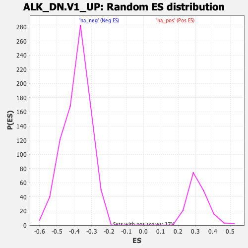

| | | Dataset | DE_genes2 |
| Phenotype | NoPhenotypeAvailable |
| Upregulated in class | na_neg |
| GeneSet | ALK_DN.V1_UP |
| Enrichment Score (ES) | -0.6749155 |
| Normalized Enrichment Score (NES) | -1.7530109 |
| Nominal p-value | 0.0 |
| FDR q-value | 4.2155597E-4 |
| FWER p-Value | 0.002 |
Table: GSEA Results Summary
 Fig 1: Enrichment plot: ALK_DN.V1_UP
Fig 1: Enrichment plot: ALK_DN.V1_UP
Profile of the Running ES Score & Positions of GeneSet Members on the Rank Ordered List
| SYMBOL | RANK IN GENE LIST | RANK METRIC SCORE | RUNNING ES | CORE ENRICHMENT | | 1 | SLAMF7 | 29 | 8.701 | 0.0392 | No |
| 2 | STC2 | 897 | 2.328 | 0.0017 | No |
| 3 | GRPR | 949 | 2.235 | 0.0094 | No |
| 4 | BST1 | 1006 | 2.132 | 0.0162 | No |
| 5 | SCN9A | 1158 | 1.851 | 0.0165 | No |
| 6 | SLC12A8 | 1387 | 1.539 | 0.0110 | No |
| 7 | SAA1 | 1515 | 1.414 | 0.0105 | No |
| 8 | FBXW4P1 | 1679 | 1.293 | 0.0075 | No |
| 9 | PDZD7 | 1738 | 1.258 | 0.0102 | No |
| 10 | NTRK1 | 1889 | 1.144 | 0.0072 | No |
| 11 | FLVCR2 | 2078 | 1.036 | 0.0016 | No |
| 12 | CARD9 | 2174 | 0.992 | 0.0009 | No |
| 13 | DECR2 | 2283 | 0.938 | -0.0007 | No |
| 14 | RIBC2 | 2330 | 0.915 | 0.0010 | No |
| 15 | IL6 | 2333 | 0.914 | 0.0052 | No |
| 16 | SLC7A5 | 2360 | 0.899 | 0.0079 | No |
| 17 | B3GALT4 | 2367 | 0.897 | 0.0118 | No |
| 18 | MRAS | 2470 | 0.862 | 0.0102 | No |
| 19 | EPAS1 | 3007 | 0.698 | -0.0164 | No |
| 20 | GDF15 | 3364 | 0.614 | -0.0334 | No |
| 21 | CLSPN | 3710 | 0.547 | -0.0501 | No |
| 22 | MINDY3 | 5517 | 0.298 | -0.1494 | No |
| 23 | CXCR5 | 5867 | 0.262 | -0.1677 | No |
| 24 | UNC13A | 6189 | 0.232 | -0.1845 | No |
| 25 | CCNK | 6263 | 0.225 | -0.1875 | No |
| 26 | ENPP2 | 6380 | 0.213 | -0.1930 | No |
| 27 | PYGB | 6637 | 0.189 | -0.2064 | No |
| 28 | FOXP3 | 7269 | 0.131 | -0.2409 | No |
| 29 | CHAC1 | 8446 | 0.018 | -0.3064 | No |
| 30 | RBM17 | 8644 | 0.000 | -0.3174 | No |
| 31 | CTH | 9745 | -0.104 | -0.3783 | No |
| 32 | CEBPG | 10230 | -0.153 | -0.4046 | No |
| 33 | FBXL8 | 10493 | -0.180 | -0.4183 | No |
| 34 | ZNF639 | 10552 | -0.185 | -0.4207 | No |
| 35 | FJX1 | 11312 | -0.277 | -0.4617 | No |
| 36 | RRAS | 11360 | -0.283 | -0.4630 | No |
| 37 | XBP1 | 11552 | -0.305 | -0.4723 | No |
| 38 | THAP3 | 11726 | -0.325 | -0.4804 | No |
| 39 | AIF1 | 11932 | -0.351 | -0.4902 | No |
| 40 | PSAT1 | 12105 | -0.375 | -0.4980 | No |
| 41 | SLC7A11 | 12160 | -0.382 | -0.4992 | No |
| 42 | ASNS | 12236 | -0.394 | -0.5016 | No |
| 43 | PCK2 | 12310 | -0.405 | -0.5037 | No |
| 44 | VEGFC | 12661 | -0.457 | -0.5211 | No |
| 45 | MTHFD2 | 12917 | -0.499 | -0.5330 | No |
| 46 | SLC1A5 | 13044 | -0.522 | -0.5376 | No |
| 47 | NFKBIL1 | 13281 | -0.565 | -0.5481 | No |
| 48 | GALK1 | 13751 | -0.659 | -0.5712 | No |
| 49 | OLFML3 | 13971 | -0.709 | -0.5800 | No |
| 50 | TRIB3 | 14705 | -0.938 | -0.6165 | No |
| 51 | ADAM12 | 14731 | -0.947 | -0.6135 | No |
| 52 | STEAP4 | 15570 | -1.361 | -0.6538 | No |
| 53 | ARHGAP4 | 15949 | -1.693 | -0.6670 | Yes |
| 54 | KRT81 | 15958 | -1.701 | -0.6594 | Yes |
| 55 | VEGFA | 15991 | -1.729 | -0.6531 | Yes |
| 56 | CBS | 16080 | -1.814 | -0.6495 | Yes |
| 57 | PIK3CG | 16115 | -1.851 | -0.6427 | Yes |
| 58 | DDIT4 | 16170 | -1.922 | -0.6367 | Yes |
| 59 | VNN2 | 16199 | -1.973 | -0.6291 | Yes |
| 60 | NOD2 | 16305 | -2.153 | -0.6248 | Yes |
| 61 | SPP1 | 16529 | -2.504 | -0.6255 | Yes |
| 62 | ANGPTL4 | 16530 | -2.515 | -0.6137 | Yes |
| 63 | ADAM28 | 16557 | -2.551 | -0.6032 | Yes |
| 64 | SLC6A9 | 16595 | -2.627 | -0.5930 | Yes |
| 65 | CHI3L1 | 16679 | -2.786 | -0.5845 | Yes |
| 66 | FAP | 16947 | -3.525 | -0.5829 | Yes |
| 67 | BEGAIN | 16950 | -3.535 | -0.5664 | Yes |
| 68 | TCIM | 16981 | -3.626 | -0.5511 | Yes |
| 69 | ANGPT2 | 17114 | -4.180 | -0.5389 | Yes |
| 70 | GDF5 | 17189 | -4.537 | -0.5217 | Yes |
| 71 | PRDM1 | 17283 | -4.997 | -0.5035 | Yes |
| 72 | TBX2 | 17310 | -5.153 | -0.4808 | Yes |
| 73 | CA2 | 17369 | -5.432 | -0.4585 | Yes |
| 74 | CSTA | 17409 | -5.644 | -0.4342 | Yes |
| 75 | TDO2 | 17721 | -7.437 | -0.4167 | Yes |
| 76 | CH25H | 17745 | -7.633 | -0.3822 | Yes |
| 77 | KYNU | 17861 | -8.961 | -0.3466 | Yes |
| 78 | BMPR1B | 17864 | -8.982 | -0.3046 | Yes |
| 79 | EREG | 17936 | -10.153 | -0.2610 | Yes |
| 80 | STMN2 | 17955 | -10.626 | -0.2121 | Yes |
| 81 | VSTM4 | 17963 | -10.895 | -0.1614 | Yes |
| 82 | SLC1A3 | 17966 | -11.109 | -0.1095 | Yes |
| 83 | BDKRB2 | 17973 | -11.244 | -0.0571 | Yes |
| 84 | ETV1 | 17999 | -12.640 | 0.0008 | Yes |
Table: GSEA details [plain text format]

Fig 2: ALK_DN.V1_UP: Random ES distribution
Gene set null distribution of ES for ALK_DN.V1_UP